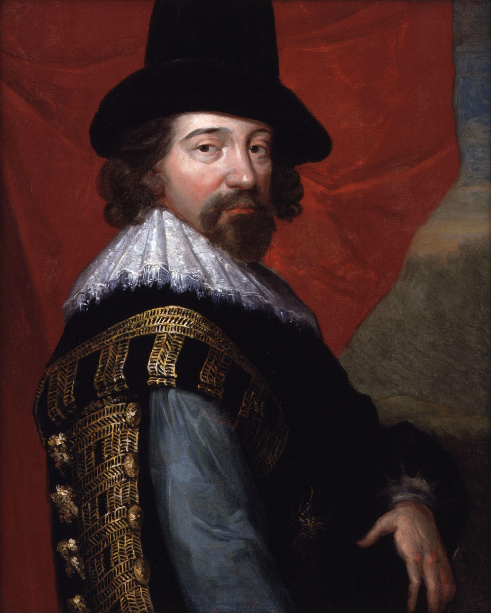
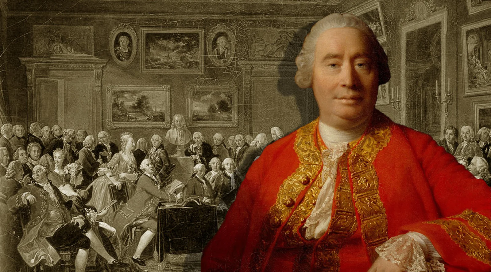
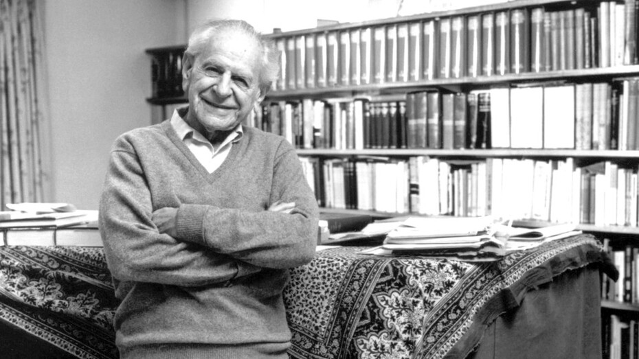
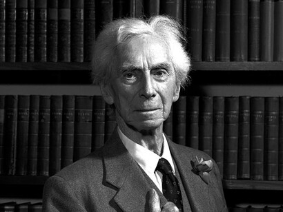
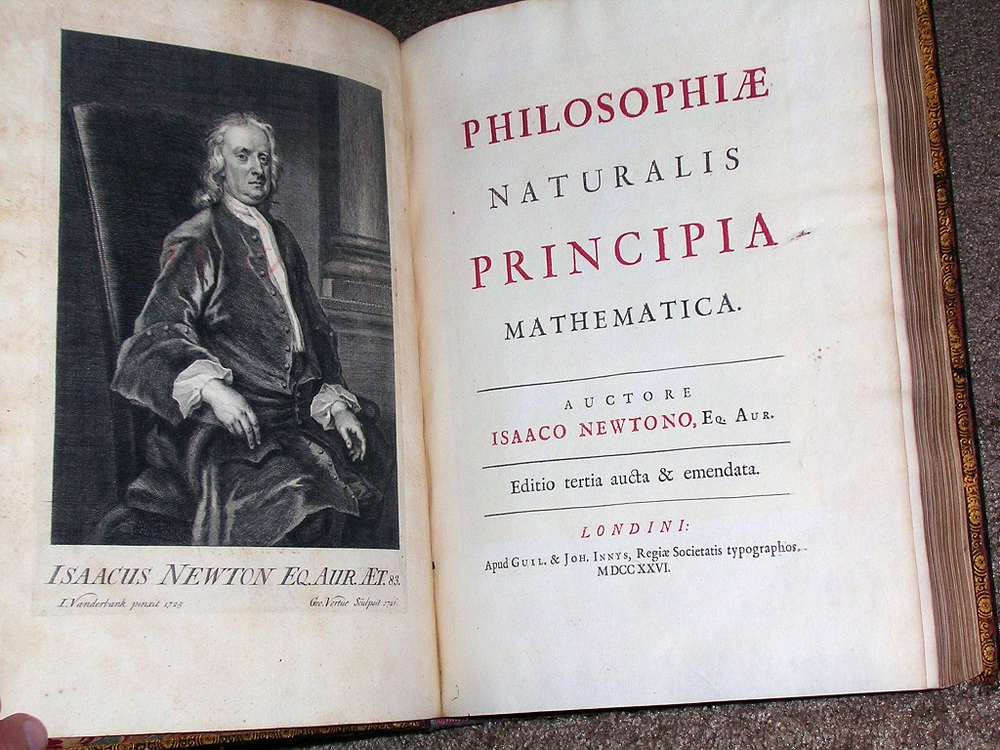
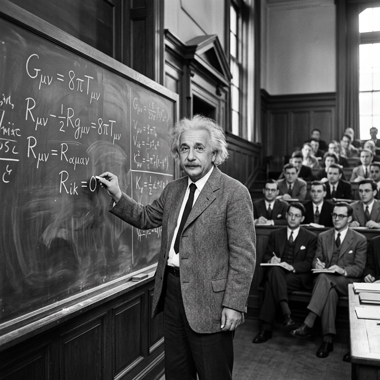

El poder de la observación
Pensemos en cómo aprendemos las cosas más básicas del mundo. El fuego quema, el sol sale por el este, si suelto una manzana, cae al piso. ¿Cómo llegamos a esas conclusiones? Las descubrimos observando que sucedían una y otra vez. Jamás vimos a una manzana flotar hacia arriba, así que asumimos que la próxima vez que soltemos una manzana, también caerá.
Este mecanismo tan natural e intuitivo se llama razonamiento inductivo. Consiste en partir de observaciones particulares (datos empíricos individuales) y llegar a una conclusión general que abarque todos los casos. Durante siglos, y especialmente a partir de la Revolución Científica del siglo XVII, este método se instituyó como la forma principal de construir conocimiento verdaderamente objetivo frente al saber derivado de los antiguos dogmas o la autoridad religiosa.
Francis Bacon: Contra los ídolos de la mente

En el siglo XVII, el universo intelectual europeo seguía dominado por los silogismos deductivos de Aristóteles. Básicamente, se discutía desde grandes axiomas universales dados por ciertos. Francis Bacon revolucionó esta estructura. En su libro Novum Organum (1620), propuso un nuevo instrumento ('órgano') para el pensamiento: invertir el proceso.
Bacon creía que para observar la naturaleza pura, sin prejuicios, el científico tenía que eliminar los "ídolos" de su mente:
- Ídolos de la tribu: Los errores intrínsecos de la naturaleza humana, como confiar demasiado en los sentidos.
- Ídolos de la caverna: Los prejuicios de cada individuo formados por su educación personal y su entorno único.
- Ídolos del foro (o mercado): Las distorsiones e imprecisiones creadas por el lenguaje común.
- Ídolos del teatro: Los dogmas falsos instaurados por sistemas filosóficos o religiones antiguas y aceptados como reales.
¿Cómo funciona el Inductivismo?
El argumento inductivista ingenuo o clásico sigue un proceso sistemático de acumular información:
"Si un gran número de A han sido observados bajo una amplia variedad de condiciones, y si todos esos A observados poseen sin excepción la propiedad B, entonces todos los A tienen la propiedad B."
Así descubrimos verdades científicas clásicas. Por ejemplo: afirmamos que "los metales se dilatan con el calor", porque luego de calentar repetidamente cobre, plata y oro en distintas condiciones alrededor del planeta, descubrimos que absolutamente todos sufrieron dilatación térmica.
El problema de la inducción y el Pavo de Russell
Pese al enorme éxito de la etapa científica moderna basada en la inducción, pronto emergió un problema muy serio en su estructura. En el siglo XVIII, el filósofo escocés empirista David Hume fue el primero en alertar que este método sufre de un problema lógico mortal: ninguna cantidad finita de observaciones puede lógicamente obligarnos y autorizarnos a decretar una conclusión garantizada sobre el infinito total.

Durante milenios, todos los cisnes observados en el Viejo Mundo eran blancos. El inductivismo más riguroso permitía establecer una ley universal intachable: "Todos los cisnes son blancos". Las observaciones acumuladas se contaban de a millones a lo largo de los siglos, sin una sola excepción.
Sin embargo, en 1697, una expedición del navegante holandés Willem de Vlamingh llegó a Australia y descubrió a la especie Cygnus atratus: el cisne negro. En un instante empírico singular, millones de observaciones previas quedaron lógicamente pulverizadas.
El filósofo Karl Popper popularizó más adelante este ejemplo histórico para fundamentar su famosa teoría del Falsacionismo. Popper usó al cisne negro para demostrar que la ciencia no puede basarse en verificar cosas (ya que siempre puede aparecer una excepción mañana), sino que debe construirse proponiendo teorías audaces y buscando la forma de "falsarlas" (refutarlas) con pruebas rigurosas. Si una teoría sobrevive a esos intentos de destrucción, es fuerte, pero jamas será una verdad definitiva.

Doscientos años después de Hume, el gran matemático Bertrand Russell propuso una analogía brillante conocida como la famosa historia de "El Pavo Inductivista" para evidenciar el gran "salto al vacío" lógico.

Imaginemos un pavo que vive en una granja y que aprendió y aplica a la perfección el método inductivista en todo su rigor.
En su primer día de vida anotó cuidadosamente: "Hoy me dieron de comer maíz a las 9 am." Como buen inductivista, sabía que no debía sacar conclusiones por un solo suceso particular. Requirió tomar muchísimas más observaciones sistemáticamente. Día tras día anotaba las condiciones en su libreta: "Me dieron de comer a las 9 am los días calurosos, me dieron maíz los martes fríos, me dieron maíz los días de tormenta..."
Jamás existió una sola excepción durante todos esos meses de la granja. Así que luego de acumular suficiente base empírica repetitiva en una gran variedad de condiciones, el 23 de Diciembre realizó la inferencia lógica final para establecer su Ley Universal Inductiva final:
"Siempre y en toda circunstancia se da de comer al pavo a las 9 am."
Lamentablemente para su rígida lógica irrefutable, el 24 de diciembre a las 9 am en lugar de maíz... se presentó el granjero y le cortó el cuello.
Lo que Hume planteó teóricamente, y lo que demostró el Pavo empíricamente en carne propia, es que las justificaciones inductivistas de generalización se operan circularmente en lo que llamamos el dogma de la "homogeneidad de la naturaleza". Inducimos que las cosas seguirán comportándose así, por mera costumbre psicológica o animal de nuestra historia previa. El problema del método es que usa a la misma inducción como prueba para asegurar que la inducción funciona.
¿Qué pasa si evaluamos la expresión matemática n² - n + 41 usando inductivismo básico, incrementando n una a una buscando un patrón general universal?
Resultados:
- n=1 → 1 - 1 + 41 = 41 (Es Primo)
- n=2 → 4 - 2 + 41 = 43 (Es Primo)
- n=3 → 9 - 3 + 41 = 47 (Es Primo)
- ...
- n=40 → (Es Primo)
Un biólogo o físico inductivista viendo que repitió el experimento 40 veces distintas, induciría la ley matemática: "Todos los elementos naturales evaluados aquí otorgan matemáticamente un número primo".
Pero ¿qué ocurre súbitamente en el elemento 41? Reemplacemos:
41² - 41 + 41 = 41² (o bien 1681)
El resultado numérico termina siendo divisible por 41 exactos y ya no es un número primo, ¡y toda la maravillosa Ley universal inductivista colapsa y se despedaza con un único y minúsculo caso negativo!
El Derrumbe de los Pilares
Espacio y Tiempo: De Newton a Einstein
El problema de la inducción no es solo una preocupación de filósofos abstractos. Ha provocado algunas de las mayores crisis en la historia de la ciencia dura. Durante más de 200 años, la física clásica se estructuró sobre las bases de Isaac Newton. Aunque suele presentarse como el triunfo del empirismo, Newton no "dedujo" ni indujo pasivamente el espacio y el tiempo absolutos a partir de miles de observaciones crudas. Para que sus leyes funcionaran, postuló una arquitectura teórica abstracta y conceptual: un espacio inmutable y un tiempo absoluto que fluía constante como un gran reloj cósmico, un escenario fijo inobservable directamente.

Generaciones enteras de científicos recolectaron millones de datos empíricos. Cada bala de cañón, cada péndulo, cada planeta observado en el cielo parecía "verificar" inductivamente que la Ley de Newton era la verdad final del universo. Parecía la victoria suprema del método inductivo.
Física de Newton
Millones de observaciones terrestres confirmaron abrumadoramente sus predicciones. Supuso un tiempo y una masa absolutos, constantes para cualquier observador sin importar su velocidad.
Relatividad de Einstein
Una anomalía al medir la luz obligó a replantear todo. En altas velocidades, el tiempo se ralentiza y el espacio se contrae. Newton estaba equivocado a nivel cósmico.
A principios del siglo XX, Albert Einstein propuso su Teoría de la Relatividad. Einstein demostró que el éxito de Newton dependía de observar siempre desde nuestro "nicho" a velocidades lentas. Al acercarnos a la velocidad de la luz, el tiempo es relativo (se dilata) y el espacio se curva.
A pesar de estar apoyada por el mayor éxito empírico jamás visto, la teoría de Newton falló en su pretensión de validez universal absoluta. Einstein reformuló los límites de aplicación del modelo, dejando a la mecánica newtoniana como una excelente y precisa aproximación bajo ciertos regímenes cotidianos (bajas velocidades y gravedades normales), en lugar de considerarla una falsedad total. Sin embargo, para la epistemología de Popper, este episodio fue la mejor prueba: ninguna teoría científica puede coronarse como verdad definitiva y sagrada. (Aunque, como advierte la tesis de Duhem-Quine, el falsacionismo en la práctica nunca es tan automático ni binario: los científicos siempre pueden introducir hipótesis ad hoc u observar distintos regímenes sin tener que descartar la totalidad de su teoría ante una primera anomalía).

Psicología Evolutiva
Si sabemos que falla, ¿por qué somos inductivistas?
Llegados a este punto, la pregunta es obligada: si la inducción tiene fallas lógicas tan graves (como lo demostraron Hume, Russell, Popper o el propio colapso de Newton), ¿por qué la mente humana está estructurada biológicamente para razonar de manera inductiva por defecto?
La respuesta moderna radica en la biología y la evolución de nuestra especie en la sabana africana. La inducción probabilística puede carecer de validez lógica absoluta para desentrañar los secretos matemáticos del cosmos cósmico, pero biológicamente es una herramienta vital de supervivencia rápida y económica en la naturaleza.
Imagina a tu antepasado Homo sapiens hace miles de años. Escucha un ruido crujiente entre los frondosos matorrales amarillos frente a él.
- Ancestro Inductivista: Recuerda inductivamente (por experiencias pasadas) que "cada vez que se mueve un arbusto amarillo y hace ese ruido, es un león". Realiza rápidamente el salto no garantizado. Huye inmediatamente y sobrevive.
- Ancestro Lógico-Deductivo Estricto: Se detiene y argumenta como Hume: "Que haya habido leones escondidos en el pasado no garantiza matemáticamente ni lógicamente que esta vez lo sea. Debo acumular evidencia empírica incontrovertible antes de correr." Es devorado.
Nuestros cerebros no evolucionaron para procesar deducciones científicas frías o lidiar con rigor infinito. Evolucionaron, como el Pavo de Russell, buscando frenéticamente detectar patrones útiles e inmediatos que tuvieran el mayor porcentaje de éxito local para perpetuar y transmitir nuestros genes, incluso si lógicamente no están justificados bajo un escrutinio cósmico total.
Conclusiones: Lógica vs. Biología
El recorrido por el inductivismo nos deja una profunda lección sobre la naturaleza del conocimiento humano y científico. Hemos visto cómo la ambición moderna de Francis Bacon por construir una ciencia puramente empírica chocó de frente con la fría e ineludible guillotina lógica de David Hume y matemática de Bertrand Russell.
Casos históricos como el Cisne Negro australiano y el colapso de la majestuosa física de Newton ante Einstein demuestran, tal como argumentaría Karl Popper, que la ciencia no avanza atesorando confirmaciones repetitivas, sino exponiéndose a ser destruida y sobreviviendo a las refutaciones. Todas las teorías, por más exitosas que parezcan bajo la inducción, son siempre provisionales.
La paradoja final es que, aunque el inductivismo es defectuoso como método para descubrir la verdad absoluta del universo, es espectacularmente eficiente como herramienta evolutiva biológica para mantenernos vivos. Somos, por herencia de la sabana, máquinas inductivas de reconocimiento de patrones. El desafío de la ciencia rigurosa es lograr ese equilibrio: usar nuestra intuición inductiva natural para generar hipótesis brillantes, pero someterlas luego al fuego despiadado de la falsación lógica para no terminar, ciegamente confiados, como el Pavo de Russell.
🤔 Para pensar y debatir
-
1
Pensemos en los "Ídolos" de Bacon: ¿Es posible limpiar y purificar a la mente humana para que alcance una "observación absolutamente pura" despojada completamente de sus propios sesgos e hipótesis?
-
2
Aún con su debilidad a que "falle el evento de un día para otro", ¿Por qué seguimos confiando en las generalizaciones inductivas todo el tiempo en nuestra sociedad?
-
3
El famoso caso del Cisne Negro: los europeos deducían inductivamente que todos los cisnes eran blancos hasta el siglo 17 porque jamás vieron uno de otro color. Hasta que cruzaron a Australia y hallaron la mutación genética. ¿Creen que los paradigmas cambian a raíz de encontrar excepciones?